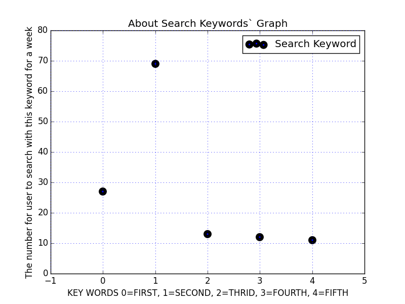

- 1. 周杰倫
- 2. xrated
- 3. Katya Santos
- 4. anak
- 5. how yo remove bike sprocket
This is data only from website for now
For one day,These are five top search keyword and the number for user to search with these keywords
- : 64 times
- : 19 times
- : 17 times
- : 16 times
- : 14 times
